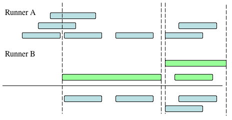
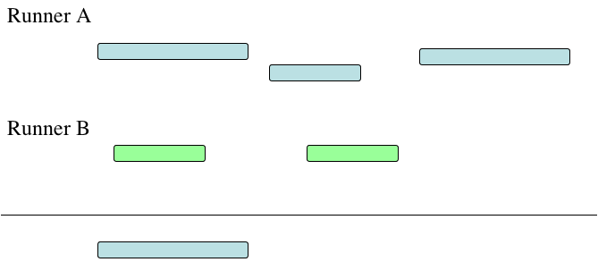

RIVALS is a software tool that allows for fast range queries and fast-in order traversals of genomic interval graphs. Many common tasks that are performed on interval graphs can be performed efficiently when the intervals are sorted in order by start position. Examples of these tasks include pooling different interval graphs into one, finding areas of maximal coverage, and locating islands of connected reads. RIVALS contains "runners", which apply a certain function (such as merge, overlap, flatten) to a sorted interval graph and produce another sorted interval graph as the result. By chaining these runners together, RIVALS can perform complex analyses on very large genomic datasets.
Genomic data is stored in an augmented interval tree. The data is stored on disk as a contiguous list of intervals sorted by start position, thus making efficient use of cache. Each interval consists of a chromosome (or scaffold/contig), strand (+, -, both), start position (inclusive), and stop position (exclusive). Searching the interval graph for a range of intervals can be done efficiently by viewing the interval list as a binary tree. Each interval in the tree is augmented with the longest endpoint of its subtree. By adding this extra field to the intervals, analysis can be done on either the entire dataset or over a particular range of interest.
[TODO: Write something about Lua?]
Example scripts are included with the software to quickly get started using its features.
When a file is imported into a RIVAL sample, two files are created: <base name>.riv and <base name>.map, where "base name" is the name given to the sample during import. The .riv file is a binary file containing the list of imported intervals sorted by start position. The .map file is a human-readable text file listing the chromosome names and indices. The .map file contains three tab-delimited fields: chromosome name, position in list of chromosome start (inclusive), position in list of chromosome stop (exclusive). These files should not be edited, with the sole exception of changing the names of the chromosomes, which is explained next.
A chromosome can have various names depending on the naming convention (e.g. "1", "chr1", "NC_000001" for chromosome 1 of human). When performing RIVAL tasks that combines multiple samples (such as merge or overlap), it is essential that the chromosome names agree. RIVALS will use the names given in the .map file. You may change the names in these files so that the chromosome naming convention is consistent across all samples of interest, such as below.
Changing chromosome names in ncbi.mapNow the sample known as "ncbi" will match any sample that contains the naming convention chr1, chr2, etc.
NC_000001 244625 398054
NC_000010 1223225 1304380
NC_000011 1042658 1133814
NC_000012 398054 472108
.......Change to
=> chr1 244625 398054
chr10 1223225 1304380
chr11 1042658 1133814
chr12 398054 472108
.......
This section includes a comprehensive list of commands available in RIVALS. The commands can roughly be divided into categories as follows: importers, sources, runners, and sinks. Importers are functions that take a text file and converts it into a RIVALS file. Currently, BED and GFF files are supported. The source commands allow you to load interval graphs. You can either create an interval manually or load an interval graph that you imported from a BED or GFF file. Once loaded, you chain together the runners to perform analyses on the interval graph. Finally, the sinks complete the analysis by outputting the results or reporting a summary of the results. The following table gives an overview of the different commands. Clicking on a command will give you a more details on what the command does. Please visit the Examples section to see examples of the commands in action.
| Importers: commands that convert text files into RIVAL files | ||
|---|---|---|
string importBED |
("from_bed", "to_rival" [,overwrite=false]) | Import BED file into RIVAL file Only overwrites if optional argument is true |
string importGFF |
("from_gff", "to_rival" [,overwrite=false]) | Import GFF file into RIVAL file Only overwrites if optional argument is true |
| Sources: commands that create an initial Runner | ||
Runner interval | ("chr", start, stop) | Create the interval chr:start-stop |
Runner range | ("from_rival") | Return all intervals in RIVAL file |
Runner range | ("from_rival", "chr") | Return all intervals in RIVAL file that are on chromosome chr |
Runner range | ("from_rival", "chr", start, stop) | Return all intervals in RIVAL file that overlap chr:start-stop |
Runner range | ("from_rival", "chr", point) | Return all intervals in RIVAL file that overlap chr:point |
| Runners: commands that can be linked together | ||
Runner merge | (Runner A, Runner B) | Merge intervals from A and B |
Runner flatten | (Runner A) | Join overlapping intervals from A |
Runner clique | (Runner A, int minimum_overlap) | Report regions with at least minimum_overlap depth |
Runner overlaps | (Runner A, Runner B) | Report intervals in A that overlap some interval in B |
Runner contained_in | (Runner A, Runner B) | Report intervals in A that are contained in some interval in B |
Runner contains | (Runner A, Runner B) | Report intervals in A that contain some interval in B |
Runner get_strand | (Runner A, "strand") | Report intervals on A that are from the specified strand: "+", "-", or "." (both) |
Runner set_strand | (Runner A, "strand") | Set intervals on A to the specified strand: "+", "-", or "." (both) |
Runner score_cutoff | (Runner A, int threshold) | Reports all intervals with score greater than or equal to the threshold |
| Sinks: commands that summarize or output the list of intervals | ||
string saveAsBED | (Runner A, "to_bed") | Create a BED file from runner A |
string saveAsBED | (Runner A) | Print runner A in BED format to standard out |
string saveAsRival | (Runner A, "to_rival") | Create a RIVAL file from runner A |
number countIntervals | (Runner A) | Count the number of intervals in runner A |


Assume the files "sample1.bed" and "sample2.gff" exist in your current directory. Import them as "bed_sample" and "gff_sample" using the BED and GFF importers, respectively:
-- Import bed and gff files into Rival samples
importBED("sample1.bed", "bed_sample")
importGFF("sample2.gff", "gff_sample")
Save the Rival sample "gff_sample" to a BED file.
-- Save only chromosome 8 of gff_sample to a BED file
saveAsBED("gff_to_bed.bed", range("gff_sample", "chr8"))
An island is a set of alignments that span a block of contiguous bases. If you view the genomic intervals as a graph - where each node is an alignment and edges are formed between overlapping alignments - then an island is a set of nodes where each node is connected to each other node by some path in the graph. Below are some examples of finding islands with high read coverage.
One measure of an island is the "population" of the island - the number of alignments that belong to the island. You can find this by using the flatten command, followed by a score cutoff (20 in this example).
-- Find all islands containing at least 20 total alignments
sample = importBED("nrsf.bed", "nrsf")
saveAsBED(score_cutoff(flatten(range(sample)), 20))
Another measure of an island is the "elevation" of the island - the maximum coverage of any of the bases in the island.
-- Find all islands containing a position of at least 100x coverage
saveAsBED( contains( flatten(range(sample)), clique(range(sample), 100)))
This example shows how to count the number of reads that overlap a particular region of interest. It shows two valid approaches, with one more efficient than the other.
Method 1: Linear Pass
Method 2: Augmented Interval TreeA = range("stat1")
B = interval("chr1", 13863058, 13864058)
print(count(overlaps(A, B)))
A = range("stat1", "chr1", 13863058, 13864058)
print(count(A))
Both give the same result. The first method does a linear pass over the intervals on chromosome 1 and counts the number of intervals that overlap the region of interest. Method two uses an interval tree to quickly locate the intervals that overlap the region. The interval tree will outperform the linear pass when the number of intervals in the sample is large and when the number of overlaps is much less than the total intervals.
Each interval contains a start position, stop position, strand, and maximum endpoint of subtree (used for range queries). Strand is 2 bits and is placed within the start and stop fields. The start, stop and max_end fields are (b-1) bits each (with 1 unused bit in the max_end field). Each interval uses 3*b bits (by default, b=32 and the fields are signed integers).
A. The largest endpoint of the subtree (12) is smaller than the start point (19) of the query interval and so does not have to be searched. B. The start point of the node interval (35) is larger than the endpoint (30) of the query interval so the subtree of the right child does not need to be searched. C. Intervals are arranged in contiguous blocks on disk by start position which allows for quickly and efficient in-order traversals.
RIVALS is written by Justin Brown and Lina Dong. For questions or feedback, please email run.intervals@gmail.com
Copyright 2010 Justin T. Brown
All Rights Reserved
EMAIL: run.intervals@gmail.com
Rivals is free software: you can redistribute it and/or modify it under the terms of the GNU Lesser General Public License as published by the Free Software Foundation, either version 3 of the License, or (at your option) any later version.
Rivals is distributed in the hope that it will be useful, but WITHOUT ANY WARRANTY; without even the implied warranty of MERCHANTABILITY or FITNESS FOR A PARTICULAR PURPOSE. See the GNU Lesser General Public License for more details.